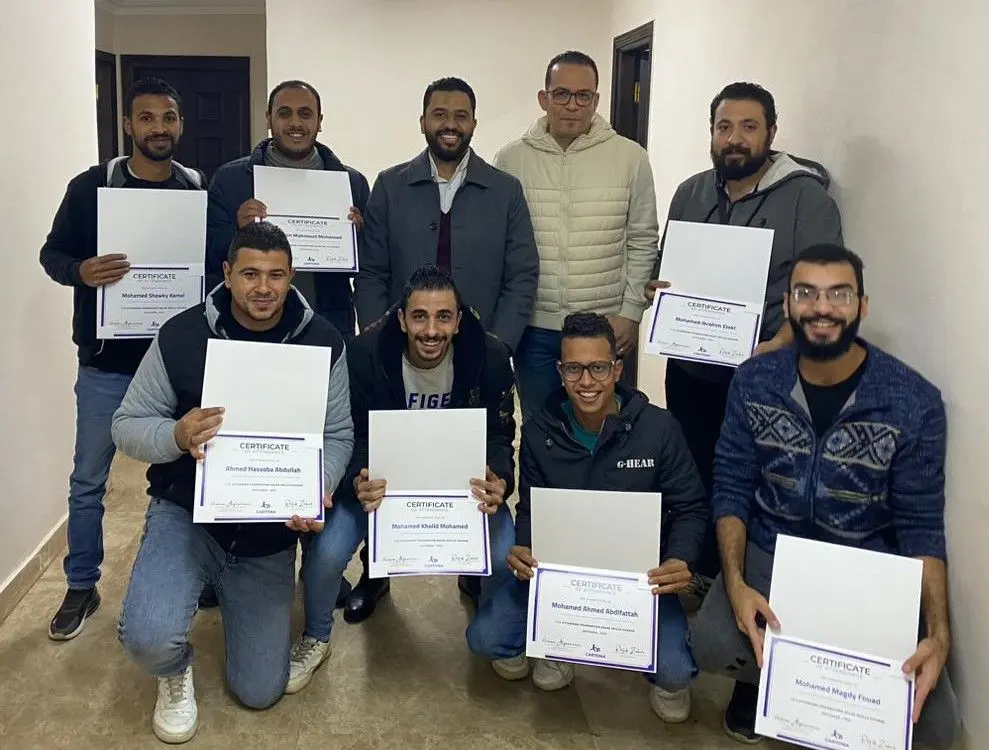

التعلّم والتطوير · تمكين مبيعات التجزئة
كيف تحوّل تدريب مبيعات التجزئة من «ساعات في القاعة» إلى نتائج أعمال تُقاس؟

أكبر خطأ يقع فيه كثير من مديري التدريب والمبيعات في قطاع التجزئة (Retail) هو قياس نجاح البرامج التدريبية بـ«عدد الساعات» أو «نسبة رضا المتدربين في نهاية اليوم». في الواقع، قد يخرج مستشار المبيعات من القاعة سعيداً بالتدريب، ثم يعود إلى الفرع في اليوم التالي ليتعامل مع العميل بنفس الأسلوب القديم تماماً!
خلال أكثر من 12 عاماً من العمل الميداني في بناء فرق المبيعات وخدمة العملاء والقيادات في مصر والسعودية — وبأكثر من 5,000 متدرب في أكثر من 15 مؤسسة — تعلّمت قاعدة واحدة لا تتغير: التدريب الذي لا يغيّر السلوك أمام العميل داخل الفرع هو تكلفة، وليس استثماراً.
ومؤخراً، أثناء قيادة وتنفيذ برنامج مستشار مبيعات التجزئة 2026 على مستوى الجمهورية في راية تريد (Raya Trade) عبر 12 دفعة في محافظات مصر، طبّقنا منهجية عملية من 4 مراحل أثبتت أن الفارق الحقيقي لا يصنعه «العرض التقديمي»، بل تصميم منظومة تعلّم كاملة مرتبطة بأرض الواقع.
1. ابدأ من أرض الفرع لا من الكتب (تشخيص TNA حقيقي)
قبل كتابة شريحة واحدة في المادة التدريبية، لا بد من النزول إلى الميدان والاستماع لثلاثة أطراف: القادة، مؤشرات الأداء الفعلية (KPIs)، ومستشار المبيعات نفسه أمام العميل. تحليل الاحتياجات التدريبية (Training Needs Analysis) يكشف بسرعة ما إذا كانت الفجوة في المهارة (كيف يكتشف احتياج العميل ويتعامل مع الاعتراضات)، أم في المعرفة بالمنتج، أم في بيئة العمل والمتابعة.
2. المتدرب يتكلم أكثر من المدرب
في مبيعات التجزئة، المحاضرات النظرية الطويلة تُنسى خلال 48 ساعة. لذلك بُنيت جلساتنا على الممارسة المباشرة داخل القاعة:
- أطر بيع واضحة وسهلة الاستدعاء في لحظة الوقوف أمام العميل.
- لعب أدوار (Role Plays) يحاكي مواقف حقيقية من داخل الفروع وشخصيات العملاء المختلفة (DISC).
- كوتشينج حيّ وفوري (Live Coaching) يصحح الأداء في لحظتها بدل الاكتفاء بالتنظير.
3. لا تترك التعلّم ينتهي عند باب القاعة (التعلم المصغّر + الذكاء الاصطناعي)
التحدي الأكبر في فرق التجزئة المنتشرة جغرافياً هو الاستمرارية. وهنا يظهر أثر الدمج بين التعلم المصغّر (Microlearning) وأدوات الذكاء الاصطناعي:
- عبر مبادرات أسبوعية قصيرة مثل «مهارة في كبسولة» (Skill in a Pill)، يتلقى مستشار المبيعات فكرة عملية واحدة قابلة للتطبيق الفوري داخل الفرع في دقائق معدودة.
- وعبر أدوات التمكين والتقييم الرقمية المدعومة بالذكاء الاصطناعي، يصبح الوصول إلى المعلومة ومتابعة تطور كل موظف أسرع وأدق بكثير من الأساليب التقليدية.
4. قِس السلوك والأثر لا الحضور فقط
المرحلة الرابعة التي تُغفل غالباً هي قياس الأثر والعائد (Impact & ROI) والمتابعة بعد التدريب مع مديري الفروع والمناطق. عندما يشارك مدير الفرع في المتابعة اليومية وتقييم السلوك الفعلي أمام العميل، يتحول التدريب من «فعالية مؤقتة» إلى ثقافة أداء مستدامة ترفع التحويل وتسرّع تهيئة الموظفين الجدد (Onboarding).
خلاصة للمديرين وقادة التعلّم والتطوير (L&D): إذا كنت تخطط لبرنامج تدريبي لفريق مبيعات أو خدمة عملاء هذا العام، اسأل نفسك قبل أن تبدأ: ما السلوك المحدد الذي أريد أن أراه داخل الفرع بعد 30 يوماً من انتهاء الجلسة؟ الإجابة على هذا السؤال هي نقطة البداية لأي برنامج يُحاسَب على أثره في الأرقام.
English Summary — Turning Retail Sales Training into Measurable Business Results
Drawing on 12+ years of L&D leadership across Egypt and Saudi Arabia and the 12-cohort Retail Sales Consultant Program 2026 at Raya Trade, Hesham Alghamrawi, MBA outlines a 4-stage performance-based learning model: data-driven Training Needs Analysis (TNA), practice-heavy facilitation (role plays & live coaching), continuous reinforcement through weekly microlearning ("Skill in a Pill") and AI-assisted enablement tools, and post-training behavioral measurement with branch leaders.